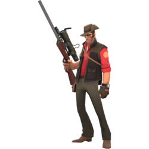
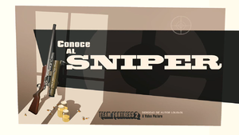

sniper
- icono:
- tipo: asistencia
- salud: 125/
 185
185 - velocidad: 100%
meet the sniper
Tirador robusto e inteligente procedente del país perdido de Nueva Zelanda y criado en Australia, el Sniper (de apellido Mundy, se desconoce su nombre de pila, aunque se sabe que su nombre de nacimiento es Mun-dee) prefiere elegir sus blancos a distancia, a pesar de que no teme ensuciarse las manos si la situación lo requiere. Prefiriendo esconderse en lugares elevados o difíciles de ver, el Sniper elimina clases lentas como el Heavy con facilidad. A pesar de que el Sniper tiende a alejarse de la primera línea de batalla, el Cazador le permite trasladarse al campo de batalla, lanzando poderosas flechas al tiempo que sus ancestrales y misteriosos poderes del Fraskungfú hacen incrementar el daño contra sus enemigos a favor de sus compañeros o de él mismo. Aunque su especialidad es matar instantáneamente con tiros en la cabeza, el Sniper es capaz de equiparse el Adormecedor de Sydney y provocar en sus enemigos valiosos minicríticos para el resto de su equipo, y a una buena distancia. El Sniper es una clase excelente apoyando al resto del equipo por su capacidad para retener al enemigo en puntos clave desde largas distancias, permitiéndole evadir el peligro. El Sniper tiene una disputa milenaria con el Spy, quien le tiene en el punto de mira por su habitual costumbre de atender al campo de batalla y descuidar todo lo que sucede a sus espaldas. La voz del Sniper es interpretada por Ramón Rocabayera en la versión española y John Patrick Lowrie en la versión inglesa.